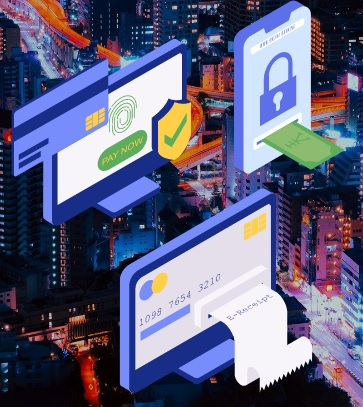

Transferências Financeiras e Compras Online
Transferências Financeiras Seguras pela Internet
Abrir ↓

Transferências Financeiras Seguras pela Internet
Com o avanço dos tempos, a tecnologia começou a ser usada para tudo, como fazer transferência de dinheiro através do site de um banco por exemplo. Muitas pessoas preferem tratar das suas situações com bancos online pois não necessitam de sair de casa. Para além de ser útil, deve se ter imenso cuidado pois algum criminoso poderá aceder a uma conta de um banco. Para evitar problemas, deve ter sempre senhas seguras. Para não ser vítima de “Engenharia Social”, Phising, Key Logger ou Vishing deve evitar ao máximo tratar de assuntos financeiros online. Contudo, no caso de não conseguir arranjar maneira de tratar de situações do banco pessoalmente, deve ter em atenção, no caso de receber emails ou mensagens, ver se o email/número corresponde ao do banco. No caso de dúvida, deve ligar para o banco para confirmar a mensagem e no caso de o banco não ter conhecimento, deve imediatamente fazer queixa na polícia, pois é crime. Deve sempre ter um antivírus no seu equipamento atualizado para não permitir o acesso de criminosos para roubo de informação confidencial.
Compras Online em Segurança
Um utilizador que faça compras a partir da internet deve saber que existem riscos quando as faz quanto à confiança do website/vendedor, aos métodos de pagamento e aos seus direitos de consumidor. Assim sendo, deve ter em atenção:
- Identificação de websites seguros de confiança – Quando um utilizador pretende fazer uma compra online, deve ter atenção nos procedimentos de segurança incorporados no website, como os certificados SSL (Secure Socket Laver) que permitem a encriptação dos dados entre o website e o servidor, links com o protocolo “HTTPS” (o mesmo mantem o website seguro) e realizar compras apenas em redes Wi-Fi seguras. No caso de o website onde pretende fazer a compra possuir o sistema 3D secure (sistema onde permite receber uma mensagem no seu telemóvel para a autorização da compra), o mesmo confirmará uma segurança adicional para a confiabilidade da sua compra. Se mesmo assim tiver dúvidas quando ao site, poderá sempre pesquisar pelo mesmo na internet para observar o feedback do mesmo;
- Métodos seguros de pagamento – A forma mais aconselhável de fazer um pagamento online é através de cartões de crédito pré-pagos pois os mesmos apenas permitem um “x” valor de dinheiro no mesmo, Paypal pois no caso de problema o mesmo reembolsa o seu dinheiro, SafeCard e MBNET/MBWAY. Se utilizar o “Envio à Cobrança” pelos CTT, é uma prova de pagamento pelo produto em boas condições;
- Direitos do consumidor em compras online – As lojas pertencentes ao espaço Europeu são mais seguras por os direitos do consumidor estarem assegurados. No espaço Europeu existem imensas regras que protegem o consumidor, como por exemplo o direito à devolução do produto num prazo de 14 dias ou a possibilidade de reclamação por uma encomenda atrasada. Estes direitos permitem também a apresentação de queixa por situações de fraude.
